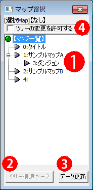

【マップ選択】
マップ選択ウィンドウは、メインウィンドウのこのアイコンボタンをクリックすることで開くことができます。
（Ver1.12でウィンドウが完全に変更されました）
|  | １．マップ一覧 マップの一覧がツリー構造で表示されています。以下の2つの操作が可能です ・マップ名をクリック ： メインウィンドウで編集するマップを切り替えます。 ・マップAをマップBにドラッグ＆ドロップ ： マップBの下にマップAを接続することができます。 ２．ツリー構造セーブ 変更したツリーの構造をセーブします。このボタンを押さずにエディターを終了させると、次にエディターを起動させたとき、元のツリー構造に戻ってしまいますのでご注意下さい。 ３．データ更新 マップ名を変更したり、新しいマップを作成したとき、そのままでは①の表示部分に変更が反映されないので、このボタンを押して表示データを更新してください。 ４．ツリーの変更を許可する ツリーの構造の変更を許可します。これをチェックしていないとツリーの構造を編集できません。 |
また次のショートカットキーが使用できます。
- N … 新規マップ作成
- C … マップのコピー
- V … マップの貼り付け
- Del … マップの削除
- Shift + ↑ ↓ … 選んでいるマップを（同じ深さ内で）上下に移動させる。
- Shift + ← → … 選んでいるマップを、親、または子の方向に移動させる
これらの機能は、右クリックメニューから選択するものと同等です。